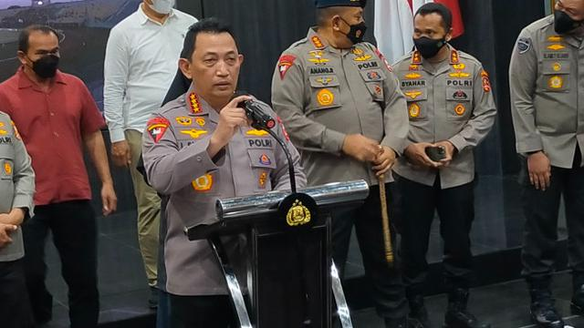

Kewenangan Pemerintah
Lalu bagaimana tanggapan klub kontestan Liga 1 musim ini terkait ditetapkannya enam tersangka dalam tragedi Kanjuruhan? CEO Bali United Yabes Tanuri enggan untuk terlalu berkomentar apapun saat dikonfirmasi pada Jumat (7/10/2022).
Menurutnya apapun keputusan yang dibuat, sepenuhnya adalah kewenangan pihak kepolisian dan pihak-pihak terkait.
“Ya menurut saya, percayakan saja kepada pemerintah terkait penyelidikan yang dilakukan,” bebernya.
Selanjutnya